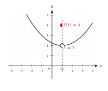
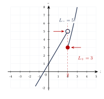
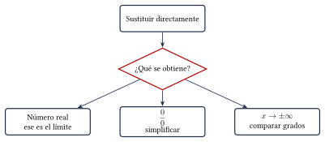
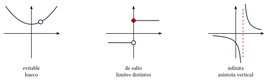

Capítulo 39
Límites
UNAM IPN
El límite describe el comportamiento de una función cuando la variable se aproxima a un valor determinado.
Para resolver ejercicios es importante reconocer cuándo puede utilizarse la sustitución directa y cuándo se necesita simplificar la expresión mediante factorización o racionalización.
39.1 Concepto de límite#
Decimos que el límite de \(f(x)\) cuando \(x\) se aproxima a \(x_0\) es \(L\) si los valores de la función se aproximan a \(L\) cuando \(x\) se acerca a \(x_0\).
Se escribe:
El límite estudia los valores de la función cerca de \(x_0\). No es necesario que la función esté definida precisamente en \(x_0\).
Calcula:
Ver solución
La función es un polinomio, por lo que podemos sustituir directamente:
Por tanto:
Los valores de la función se aproximan a \(5\) desde ambos lados:
39.2 Límite y valor de la función#
El límite y el valor de la función son conceptos diferentes.
Puede ocurrir que:
exista, aunque:
no esté definida.

En la figura:
pero:
39.3 Límites laterales#
El límite por la izquierda considera valores menores que \(x_0\):
El límite por la derecha considera valores mayores que \(x_0\):
El límite:
existe si y solo si los límites laterales existen y son iguales:
Analiza el límite en \(x=2\) de:
Ver solución
Por la izquierda se utiliza:
Entonces:
Por la derecha se utiliza:
Entonces:
Como:
el límite no existe:

39.4 Álgebra de límites#
Si:
y:
entonces:
39.5 Sustitución directa#
Si \(P(x)\) es un polinomio, entonces:
Una función racional también puede evaluarse por sustitución directa si el denominador no se hace cero.
Calcula:
Ver solución
Sustituimos:
Por tanto:
Calcula:
Ver solución
Sustituimos:
Por tanto:
39.6 Procedimiento básico#
Para calcular un límite:
- Sustituye directamente el valor de \(x\).
- Si obtienes un número real, ese es el límite.
- Si aparece: \[\frac{0}{0},\] simplifica mediante factorización o racionalización.
- Si el denominador tiende a cero y el numerador no, analiza los límites laterales.
- Si: \[x\to\infty,\] compara los grados.

39.7 Indeterminación \(\frac{0}{0}\)#
La expresión:
es una forma indeterminada. No significa que el límite sea cero ni que no exista.
Indica que la expresión debe simplificarse.
39.7.1 Factorización#
Calcula:
Ver solución
La sustitución directa produce:
Factorizamos:
Entonces:
Para:
se simplifica:
Ahora sustituimos:
Por tanto:
Calcula:
Ver solución
Factorizamos:
Entonces:
Por tanto:
Al cancelar un factor común no se está evaluando la expresión en el punto problemático.
La simplificación es válida en los puntos cercanos, donde el factor no es cero. Esto es suficiente porque el límite estudia el comportamiento cercano al punto.
39.7.2 Racionalización#
Cuando aparece una diferencia de radicales, se utiliza el conjugado.
Calcula:
Ver solución
La sustitución directa produce:
Multiplicamos por el conjugado:
Simplificamos el numerador:
Entonces:
Sustituimos:
Racionalizamos:
39.8 Límite trigonométrico fundamental#
Si el ángulo está expresado en radianes:
También:
Calcula:
Ver solución
Multiplicamos y dividimos entre \(5\):
Cuando:
también:
Por tanto:
Así:
Los límites trigonométricos fundamentales requieren que los ángulos se midan en radianes.
39.9 Límites infinitos#
Si el denominador se aproxima a cero y el numerador no, la función puede crecer sin límite.
Analiza:
Ver solución
Por la izquierda:
por lo que:
Por la derecha:
por lo que:
Como los límites laterales no coinciden:
La recta:
es una asíntota vertical.
Los símbolos:
describen un comportamiento no acotado. No representan números reales.
39.10 Límites al infinito#
Los límites al infinito describen el comportamiento de una función cuando:
o:
Para:
se cumple:
39.10.1 Funciones racionales#
Sea:
donde \(P\) y \(Q\) son polinomios.
Para calcular:
se comparan los grados.
- Si: \[\deg P<\deg Q,\] entonces: \[\lim f(x)=0\]
- Si: \[\deg P=\deg Q,\] el límite es el cociente de los coeficientes principales.
- Si: \[\deg P>\deg Q,\] no hay un límite horizontal finito. Debe analizarse el signo y el comportamiento dominante.
Calcula:
Ver solución
Los polinomios tienen el mismo grado.
El límite es el cociente de los coeficientes principales:
Calcula:
Ver solución
El grado del numerador es menor que el grado del denominador.
Por tanto:
Calcula:
Ver solución
Los términos dominantes son:
Cuando:
se tiene:
Por tanto:
39.11 Continuidad#
Una función \(f\) es continua en \(x_0\) si se cumplen las tres condiciones:
- \(f(x_0)\) está definida;
- \(\displaystyle\lim_{x\to x_0}f(x)\) existe;
- \[\lim_{x\to x_0}f(x)=f(x_0).\]
En forma compacta:
Las discontinuidades principales son:
- Evitable: el límite existe, pero la función no está definida en el punto o tiene un valor distinto.
- De salto: los límites laterales existen, pero son diferentes.
- Infinita: algún límite lateral es infinito y existe una asíntota vertical.

Analiza la continuidad de:
en:
Ver solución
La función no está definida en \(x=-3\):
Además:
Por tanto, la función tiene una discontinuidad infinita y la recta:
es una asíntota vertical.

Analiza la continuidad de:
en:
Ver solución
La función no está definida en \(x=2\).
Factorizamos:
Para \(x\neq2\):
El límite es:
Como el límite existe, pero \(f(2)\) no está definida, la función presenta una discontinuidad evitable.
El hueco está en:
Determina si:
es continua en:
Ver solución
Todo polinomio es continuo en todos los números reales.
Además:
y:
Como:
la función es continua en \(x=1\).
39.12 Resumen#
Existencia del límite:
Indeterminación principal:
Límite trigonométrico:
Funciones racionales al infinito:
Continuidad en \(x_0\):
39.13 Errores frecuentes#
Recuerda:
- El límite no depende necesariamente del valor de la función en el punto.
- La forma: \[\frac{0}{0}\] no es una respuesta.
- Solo pueden cancelarse factores, no términos separados por sumas o restas.
- Los límites laterales deben coincidir para que exista el límite bilateral.
- Una división entre cero no siempre produce el mismo infinito. Debe analizarse el signo por ambos lados.
- Si el grado del numerador es mayor, no siempre basta escribir \(+\infty\). Debe analizarse el término dominante y el sentido del límite.
- Para que una función sea continua, el límite debe coincidir con el valor de la función.
- Los límites trigonométricos fundamentales utilizan radianes.
39.14 Ejercicios propuestos#
Calcula:
Ver solución
Sustituimos directamente: \[\lim_{x\to3}(2x^2-5x+1)=2(3)^2-5(3)+1=18-15+1=4.\]
Calcula:
Ver solución
Sustituimos directamente: \[\lim_{x\to-1}\frac{x^2+3x-2}{2x+1}=\frac{(-1)^2+3(-1)-2}{2(-1)+1}=\frac{1-3-2}{-2+1}=\frac{-4}{-1}=4.\]
Calcula:
Ver solución
Al sustituir obtenemos \(\frac{0}{0}\). Factorizamos el numerador: \[x^2-1=(x-1)(x+1).\] Calculamos el límite: \[\lim_{x\to1}\frac{(x-1)(x+1)}{x-1}=\lim_{x\to1}(x+1)=2.\]
Calcula:
Ver solución
Al sustituir obtenemos \(\frac{0}{0}\). Factorizamos el numerador: \[x^2+5x+6=(x+2)(x+3).\] Calculamos el límite: \[\lim_{x\to-2}\frac{(x+2)(x+3)}{x+2}=\lim_{x\to-2}(x+3)=1.\]
Calcula:
Ver solución
Al sustituir obtenemos \(\frac{0}{0}\). Factorizamos el denominador: \[x^2-16=(x-4)(x+4).\] Calculamos el límite: \[\lim_{x\to4}\frac{x-4}{(x-4)(x+4)}=\lim_{x\to4}\frac{1}{x+4}=\frac{1}{8}.\]
Calcula:
Ver solución
Al sustituir obtenemos \(\frac{0}{0}\). Racionalizamos multiplicando por el conjugado: \[\lim_{x\to0}\frac{\sqrt{x+9}-3}{x}\cdot\frac{\sqrt{x+9}+3}{\sqrt{x+9}+3}=\lim_{x\to0}\frac{x+9-9}{x(\sqrt{x+9}+3)}=\lim_{x\to0}\frac{x}{x(\sqrt{x+9}+3)}.\] \[=\lim_{x\to0}\frac{1}{\sqrt{x+9}+3}=\frac{1}{\sqrt{9}+3}=\frac{1}{6}.\]
Calcula:
Ver solución
Multiplicamos y dividimos por 3: \[\lim_{x\to0}\frac{\sen(3x)}{x}=\lim_{x\to0}3\frac{\sen(3x)}{3x}=3(1)=3.\]
Calcula:
Ver solución
El límite es al infinito y ambos polinomios son de grado 2. El límite es el cociente de los coeficientes principales: \[\frac{5}{2}.\]
Calcula:
Ver solución
El grado del numerador es 1 y el del denominador es 2. Como el grado del denominador es mayor, el límite es: \[0.\]
Calcula los límites laterales:
y:
Ver solución
Analizamos los límites laterales. Por la izquierda, \(x-4<0\), por lo que: \[\lim_{x\to4^-}\frac{1}{x-4}=-\infty.\] Por la derecha, \(x-4>0\), por lo que: \[\lim_{x\to4^+}\frac{1}{x-4}=+\infty.\]
Analiza la continuidad de:
en:
Ver solución
La función no está definida en \(x=4\). Además, los límites laterales son infinitos. Por tanto, presenta una discontinuidad infinita.
Analiza la continuidad de:
en:
Ver solución
La función no está definida en \(x=3\). Sin embargo, calculando el límite: \[\lim_{x\to3}\frac{x^2-9}{x-3}=\lim_{x\to3}(x+3)=6.\] Como el límite existe pero la función no está definida en el punto, presenta una discontinuidad evitable.